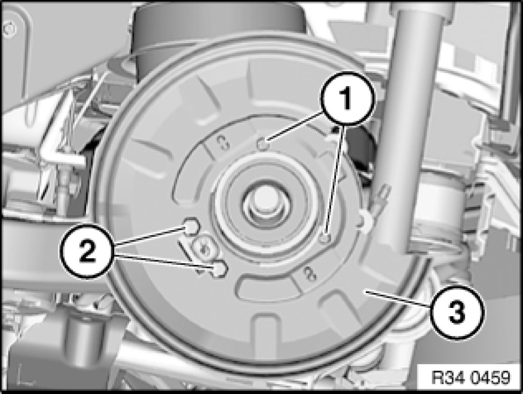

Replacing Rear Left (or Right) Brake Carrier/Brake Guard Plate
34 21 173 - Replacing rear left (or right) brake carrier/brake guard plate

Necessary preliminary tasks:
- Remove expander lock Removing and Installing/Replacing Expander Lock for Handbrake Shoes.
- Remove wheel hub Replacing Left Wheel Bearing on Rear Axle Shaft.
- After completing tasks, adjust handbrake Adjustments.

Release screws (1).
Release screws (2) and remove brake carrier (3).
Installation:
Tightening torque 34 21 6AZ 34 21 Rear Brake.